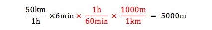

計算は単位とともに
|
小学校の算数で「速さと道のり」というような名前の単元があります。その中で
（速さ）× （時間) ＝ （道のり)
のような公式らしきものを習います。
しかしこんな公式らしきものを覚える必要は無いでしょう。
「時速50kmの車が6時間走り続けたら何km進むか」という問題があれば「時速」という言葉の意味から考えて「1時間に50km進む車が6時間走り続けたら300km進む」という回答が出来るはずです。ただしこの単元を初めて学習する小学生に前述の教え方だけではやや不親切かもしれません。 そこで次のような単位をつけた計算を教えることを提案します。 
上式のように最左辺から最右辺に至るまでの中間で「時間」という単位を約分しています。 「時間」と漢字で書くのが面倒であれば英語の"hour"の頭文字hをとって とでもすればいいのです。 この単位をつけた計算を反復して定着することができたのなら、 のような意味不明な間違いもなくなるでしょう。 単位をつけ忘れて減点なんてこともなくなるでしょう。 もし「時速50kmの車が6分間走り続けたら何m進むか」という問題があれば 「小中学校で学びたかった算数・数学/単位の変換」 でも紹介した「単位のついていない1」をかけることで

（minは英語のminute(分)の略） と答えを出すことが出来ます。 この単位をつけた計算に習熟すると、後に物理学や化学の計算をするときにとても役に立ちます。 理科を学ぶためにも身につけたい計算習慣と言えるでしょう。 |
Tweet
「My opinion」へ戻る